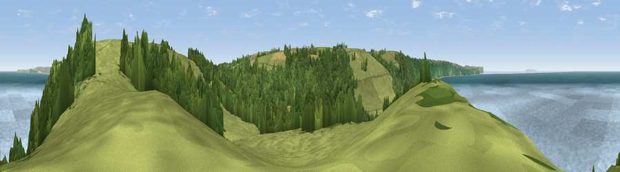

Viewpoint near Abbotsham
#3434 in England · top 11% of its area beats it · near AbbotshamWhere it is
The exact computed spot (SS 39312 25175). Click the marker for map links.
The view, rendered

A 360° render of this exact spot computed from the terrain model, tree cover and land cover — summer colours, afternoon light, calibrated against photographs of famous viewpoints. Real trees, hedges and buildings will differ in detail.
The panorama
Grey silhouette: terrain skyline in each direction (720 bearings, Earth curvature and refraction included). Dashed green: skyline with trees (+15 m) and buildings (+8 m) as obstacles. Blue strip: how far the ground is visible on each bearing.
Where the view opens
Wedge length = distance to the farthest visible ground on that bearing (vegetation-aware). Rings at 10, 25 and 50 km.
What fills the view
46% water · 29% grassland · 24% woodland · 1% cropland
Angular shares of the visible panorama (visual magnitude), not map area. Landscape diversity 0.48 (0–1 Shannon).
Key numbers
More beautiful places nearby
The staircase of upgrades: each row has a higher view potential than everything closer. Driving times are estimates from straight-line distance, calibrated against real road routing — check an actual route before setting out.
| Place | Direction | Drive | Score |
|---|---|---|---|
| Viewpoint near Abbotsham | ENE · 0 km | ~1 min | 79.9 |
| Viewpoint near Parkham | SSW · 1 km | ~4 min | 81.7 |
| Viewpoint near Bucks Mills | SW · 2 km | ~6 min | 84.0 |
| Viewpoint near Woolacombe | NNE · 18 km | ~31 min | 84.7 |
| Viewpoint near Combe Martin | NE · 30 km | ~47 min | 86.9 |
| Viewpoint near Combe Martin | NE · 31 km | ~48 min | 88.9 |
| Holdstone Hill | NE · 32 km | ~49 min | 90.2 |
| The Knoll | ESE · 120 km | ~144 min | 91.0 |
51.00346, -4.29159 · source: screening · position refined by local search. Computed location — check access rights before visiting.